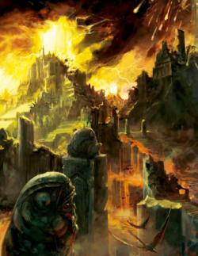
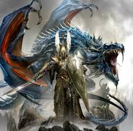

Great Catastrophe
The lore of Warhammer Fantasy is deep and rich. There are many things which happened over the course of history. Thousands of years ago when the Old Ones still walked the planet, they had seeded life on the planet of Mallus. They built two huge gates at the north and south pole to facilitate the new world. They used the awesome power of the realm of chaos to power the gates and harness it. However disaster struck and the gates collapsed, chaos ran rampant and demons flooded the world in untold numbers. The Old Ones fled the doomed world, however the younger races fought back. Most notably were the lizardmen and Asur. The lizardmen were built to combat the demons, and so the armies of saurus warriors and others held back the demon legions for years. However the demons were near infinite in number and pushed the young races back. Eventually the lizardmen were cornered into Itza, the first and greatest of temple cities. Here Lord Kroak, the first and most powerful Slann of all, held the demons back for decades with a enormous forcefield. Using titanic apocalypse magic, he destroyed the legions of demons, but alas he was defeated. However he was able to hold the demons long enough for the Asur to create the vortex.
The Vortex
Aenerion the Defender and Caledor Dragontamer led the Asur to victory during the catastrophe. After fighting off the demon tide for nearly a century, the high elves became weary and knew defeat was near. However Caledor had a plan, a vortex which would siphon excess magic from the world and spell doom to the demons. It was a last resort but there was no other option. However Aenerion's own family were killed. Immense was his rage and anguish. In his rage he travelled to the Shrine of Khaine and drew forth the Sword of Khaine. With it he led the Asur to victory after victory against the demons However the sword started to affect Aenerion, madness and cruelty slowly taking hold of him. Caledor argued with Aenerion about this, but however was unsuccessful. Caledor left Aenerion's side and eventually went to the Isle of the dead and started the ritual. Aenerion was angered but had no other choice, and so he went after Caledor to defend him and his mages. There the armies of the elves and chaos met in a titanic clash. Dragons so large in number they blotted out the sky, the Chaos Gods sent forth their champions to try and stop the ritual. Eventually 4 greater demons tried to stop Caledor, however Aenerion with fury and determination managed to fell all 4 of the vile demons. Eventually Caledor and his mages managed to complete the ritual, however they were bound to the vortex itself. Forever sealed inside. Aenerion realizing his madness travelled back to the Shrine and thrusted the sword back into place, and then died.